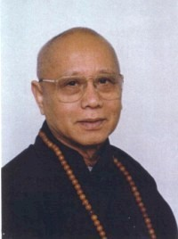

| Trang gốc |
Trang web BuddhaSasana |
Unicode Times font |
|
NGHỆ
THUẬT TẠO HẠNH PHÚC Tác
Giả: ĐỨC ĐẠT LAI LẠT MA và Bác Sĩ HOWARD C. CUTLER PHẦN V TÓM TẮT CÁC SUY TƯ VỀ CÁCH SỐNG CUỘC ĐỜI TINH THẦN-ooOoo- CHƯƠNG 15 NHỮNG GIÁ TRỊ TINH THẦN C ĂN BẢNNghệ thuật tạo hạnh phúc có nhiều thành tố. Như chúng ta đã thấy, nó bắt đầu bằng phát triển sự hiểu biết về nguồn gốc đích thực của hạnh phúc và sắp xếp theo thứ tự ưu tiên trong đời sống chúng ta căn cứ trên sự trau dồi những nguồn gốc ấy. Nó liên quan đến kỷ luật nội tâm, một tiến trình diệt trừ dần dần những trạng thái tinh thần tiêu cực và thay thế chúng bằng trạng thái tinh thần tích cực, xấy dựng như hảo tâm, khoan dung và tha thứ. Trong việc nhận dạng những nhân tố dẫn đến cuộc đời đầy đủ và mãn nguyện, chúng tôi kết thúc bằng một cuộc thảo luận về thành tố sau cùng - tinh thần. Có một khuynh hướng tự nhiên kết hợp tinh thần với tôn giáo. Phương pháp đạt hạnh phúc của Đức Đạt Lai Lạt Ma đã được hình thành qua nhiều năm huân luyện nghiêm khắc với tư cách là nhà sư Phật Giáo được thọ giới. Ngài cũng được coi là một học giả Phật Giáo uyên bác. Tuy nhiên, đối với nhiều người không phải là Ngài đã nắm được nhiều vấn đề triết lý phức tạp có sức hấp dẫn, mà chính là ở nơi Ngài, con người nhiệt tình, vui tính, với phương pháp giải quyết thực tế về đời sống. Trong quá trình đàm luận với Ngài, thực ra, tính nhân đạo căn bản của Ngài dường như còn quan trọng hơn cả vai trò chính của Ngài là một nhà sư Phật Giáo. Mặc dầu đầu Ngài cạo trọc và quần áo nấu sồng, mặc dầu địa vị của Ngài là một trong những nhân vật tôn giáo lỗi lạc nhất thế giới, không khí trong những buổi thảo luận vẫn chỉ là con người này chuyện với người khác, bàn luận đến những vấn đề mà tất cả chúng ta đều chia sẻ. Để giúp chúng ta hiểu được ý nghĩa thực sự của tinh thần, Đức Đạt Lai Lạt Ma bắt đầu bằng cách phân biệt tinh thần và tôn giáo: "Tôi tin rằng điều thiết yếu là đánh giá cao tiềm năng của con người và công nhận tầm quan trọng của sự biến đổi nội tâm. Điều này có thể đạt được qua cái gọi là tiến trình phát triển tinh thần. Đôi khi tôi gọi nó là phương diện tinh thần trong cuộc đời của chúng ta. "Có hai mức độ tinh thần. Một mức độ tinh thần liên quan đến niềm tin tôn giáo của chúng ta. Trên thế giới này, có quá nhiều người khác nhau, có quá nhiều tâm tính khác nhau. Có năm tỷ người, và trong một khía cạnh nào đó, tôi nghĩ rằng cần phải có năm tỷ tôn giáo khác nhau, vì có có nhiều tâm tính quá lớn như vậy. Tôi nghĩ rằng mỗi cá nhân nên dân thân vào một con đường tinh thần phù hợp nhất với tâm tính, khuynh hướng tự nhiên, tính khí, niềm tin, gia đình và bối cảnh văn hóa của mình. "Thí dụ là một nhà sư Phật Giáo, tôi thấy Phật Giáo thích hợp nhất với tôi. Cho nên, đối với tôi, tôi thấy Phật Giáo là tốt nhất. Nhưng điều đó không có nghĩa là Phật Giáo tốt nhất cho tất cả mọi người. Điều đó thật rõ ràng. Điều đó thật chắc chắn. Nếu tôi tin là Phật Giáo tốt nhất cho tất cả mọi người, thì quả là dại dột, vì con người khác nhau có tâm tính khác nhau. Cho nên, nhiều người khác nhau cần nhiều tôn giáo khác nhau. Mục đích của tôn giáo là đem lợi ích cho con người, và tôi nghĩ rằng nếu chúng ta chỉ có một tôn giáo, sau một thời gian tôn giáo đó sẽ không còn giúp ích cho nhiều người. Chẳng hạn nếu chúng ta có một nhà hàng ăn, và ta chỉ bán có một món ăn- ngày này qua ngày khác, cho mỗi bữa ăn - nhà hàng đó sẽ không còn bao nhiêu khách sau một thời gian. Người ta cần và thích nhiều loại thức ăn khác nhau vì có quá nhiều khẩu vị khác nhau. Cũng như vậy, tôn giáo có nghĩa là nuôi dưỡng tinh thần con người. Và tôi nghĩ rằng chúng ta cần ca ngợi sự đa dạng trong tôn giáo và phát triển sự đánh giá cao hết sức sư đa dạng của tôn giáo. Cho nên số người thấy Do Thái Giáo, Cơ Đốc Giáo, hay truyền thống Hồi Giáo thích hợp hơn với họ. Cho nên, chúng ta phải tôn trọng và đánh giá cao giá trị của tất cả những truyền thống tôn giáo lớn khác nhau trên thế giới. "Tất cả những tôn giáo này có thể góp phần hữu hiệu cho lợi ích nhân loại. Tất cả những tôn giáo đó đều được lập ra để làm cho một cá nhân hạnh phúc hơn, và thế giới tốt đẹp hơn. Tuy nhiên để tôn giáo có một tác động làm thế giới tốt đẹp hơn, tôi nghĩ điều quan trọng là cá nhân ấy phải được hành trì chân thành giáo lý của tôn giáo ấy. Ta phải hòa nhập giáo lý vào đời sống bất kỳ ở đâu, do đó ta có thể dùng những giáo lý ấy làm nguồn sức mạnh nội tâm. Và ta phải đạt được sự hiểu biết sâu xa về lý tưởng tôn giáo, không phải chỉ ở mức độ trí tuệ mà còn là cảm nghĩ sâu xa khiến chúng trở thành phần kinh nghiệm nội tâm của ta. "Tôi tin rằng ta có thể trau dồi sự tôn trọng sâu xa đối với tất cả những truyền thống tôn giáo khác nhau. Một lý do phải tôn trọng các truyền thống tôn giáo khác là vì tất cả những truyền thống ấy đều đưa ra một khuôn khổ đạo đức chi phối cách hành xử của ta và có những hiệu quả tích cực. Chẳng hạn như trong truyền thống Cơ Đốc Giáo, niềm tin vào Thượng Đế có thể cung cấp một khuôn khổ đạo đức chặt chẽ và rõ ràng chi phối cách hành xử và lối sống của ta - và nó có thể là một phương pháp mạnh mẽ vì có một sự mật thiết nào đó được tạo ra trong sự liên hệ của ta với Thượng Đế, và cách bày tỏ tình thương yêu của ta với Thượng Đế, người đã tạo ra bạn, là chứng tỏ tình thương và tình thương với đồng loại. "Tôi tin rằng có nhiều lý do tương tự để kính trọng các truyền thống tôn giáo khác. Tất cả những tôn giáo lớn, đương nhiên, đã cung cấp lợi ích to lớn cho hàng triệu con người qua nhiều thế kỷ trong quá khứ. Và ngay cả trong lúc này, hàng triệu người vẫn được lợi ích, hồ như được truyền cảm hứng, từ những truyền thống tôn giáo khác nhau này. Thật là rõ ràng. Và trong tương lai, cũng vậy, những truyền thống tôn giáo khác nhau ấy, sẽ đem cảm hứng cho hàng triệu người của thế hệ sắp tới. Đó là một sự thật. Vậy cho nên, thật quan trọng, là phải hiểu thực tế đó và tôn trọng các truyền thống khác. "Tôi nghĩ rằng cách tăng cường sự tương kính lẫn nhau là nhờ sự tiếp xúc gần gũi hơn giữa những người có tín ngưỡng khác nhau. - sự tiếp xúc trực tiếp. Tôi đã cố gắng trong ít năm vừa qua để gặp gỡ và đối thoại, chẳng hạn, với cộng đồng Cơ Đốc và Do Thái, và tôi nghĩ rằng một số kết quả tích cực thực sự đã bắt nguồn từ việc này. Do sự tiếp xúc gần gũi này, chúng ta có thể học hỏi được về những đóng góp hữu ích mà những tôn giáo ấy đã đem cho nhân loại và tìm ra những khía cạnh hữu ích của những truyền thống khác để chúng ta có thể học hỏi. Chúng ta còn có thể khám phá ra phương pháp và kỹ thuật mà ta có thể đem áp dụng trong sự tu tập của chúng ta. "Vậy,điều thiết yếu là phát triển mối liên hệ gần gũi giữa những tôn giáo khác nhau, nhờ đó chúng ta có thể làm được một cố gắng chung vì lợi ích của nhân loại. Có quá nhiều điều chia rẽ nhân loại, có quá nhiều vấn đề trên thế giới. Tôn giáo phải là phương cách chữa trị giúp giảm xung đột và khổ đau trên thế giới, chứ không phải một nguồn gốc khác gây xung đột. "Chúng ta thường được nghe nói tất cả mọi người đều bình đẳng. Theo điều này chúng ta muốn nói là mọi người rõ ràng đều ham muốn hạnh phúc. Ai cũng có quyền làm một người hạnh phúc. Và ai cũng có quyền khắc phục khổ đau. Vậy nếu ai nhận được hạnh phúc hay được lợi ích từ một truyền thống tôn giáo riêng biệt nào đó, điều quan trọng là phải tôn trọng quyền lợi của người khác; bởi vậy, chúng ta phải học cách tôn trọng tất cả những truyền thống tôn giáo lớn này. Điều đó thật rõ ràng." Trong tuần lễ đàm thoại với Đức Đạt Lai Lạt Ma ở Tuscon, tinh thần tôn trọng lẫn nhau có ý nghĩa hơn cả điều mong mỏi. Người ta thấy có những người thuộc nhiều truyền thống tôn giáo khác nhau trong số thính giả, kể cả một đại diện có hạng của tăng lữ Cơ Đốc. Mặc dù những khác biệt về truyền thống, nhưng bầu không khí an bình và hòa hợp bao trùm căn phòng. Ai cũng thấy điều này. Có một tinh thần trao đổi, không có một chút hiếu kỳ nào trong số những người không phải là Phật Tử hiện diện về sự tu tập hàng ngày của Đức Đạt Lai Lạt Ma. Nhưng cũng do hiếu kỳ thúc đẩy một thính giả hỏi: "Liệu có phải một người Phật Tử, hay một người của truyền thống khác, tu tập, như cầu nguyện dường như phải được nhân mạnh phải không. Tại sao cầu nguyện lại quan trọng cho đời sống tinh thần? Đức Đạt Lai Lạt Ma trả lời: "Cầu nguyện là sự nhắc nhở, đơn giản hàng ngày về phép tắc đã được giữ vững và niềm tin. Chính bản thân tôi, tụng đi tụng lại một số câu kệ Phật Giáo vào mỗi buổi sáng. Những câu kệ này giống như cầu nguyện, nhưng thực ra là những lời nhắc nhở. Nhắc nhở cách nói với người khác, cách đối xử với người khác, cách đương đầu với các vấn đề hàng ngày, những điều giống như vậy. Cho nên, về tổng thể sự tu tập của tôi liên quan đến nhắc nhở - quán chiếu tầm quan trọng của từ bi, tha thứ, tất cả những điều này. Và dĩ nhiên nó bao gồm một số hành thiền Phật Giáo về bản chất của thực tế, và cũng một số về quán tưởng. Vậy, trong sự tu tập hàng ngày của tôi, trong việc cầu nguyện hàng ngày của tôi, nếu tôi có thì giờ rảnh rỗi, phải mất đến bốn giờ. Kể cũng khá dài." Ý nghĩ bỏ bốn giờ một ngày để cầu nguyện khiến một thính giả khác hỏi, "Tôi là một người mẹ phải đi làm lại có con nhỏ, có rất ít thì giờ rảnh. Đối với một người thực sự quá bận rộn, làm sao có thể có thì giờ để cầu nguyện và hành thiền?" "Ngay cả trường hợp của tôi, nếu muốn than phiền, tôi luôn luôn có thể than phiền không có thì giờ." Đức Đạt Lai Lạt Ma nhận định."Tôi rất bận. Tuy nhiên nếu bạn cố gắng, bạn có thể luôn luôn tìm được thì giờ, thí dụ vào buổi sáng sớm. Rồi tôi nghĩ bạn có thì giờ vào cuối tuần. Bạn có thể hy sinh một số vui chơi," Ngài cười. "Cho nên, tôi nghĩ ít nhất có nửa giờ mỗi ngày. Hay nếu bạn cố gắng, chịu khó, có lẽ bạn có thể tìm được, ba mươi phút vào buổi sáng, và ba mươi phút vào buổi tối. Nếu bạn thực sự nghĩ đến việc này, bạn có thể tìm ra được cách có thì giờ. "Tuy nhiên nếu bạn nghiêm túc nghĩ đến ý nghĩa thực sự của sự tu tập tinh thần, việc này sẽ liên quan đến việc phát triển và rèn luyện trạng thái tinh thần, thái độ, tâm lý, cảm xúc và sức khỏe. Bạn không nên giới hạn sự hiểu biết sự tu tập tinh thần vào một số hoạt động thể chất hay bằng lời, giống như đọc thuộc lòng lời cầu nguyện hay tụng niệm. Nếu sự hiểu biết về sự tu tập tinh thần bị giới hạn vào những hoạt động như thế, thì, dĩ nhiên, bạn cần có một số thì giờ nhất định, một số thì giờ rành riêng cho việc tu tập - vì bạn không thể đi làm các công việc vặt hàng ngày như nấu ăn vân vân...trong khi tụng chú. Làm như vậy có thể làm phiền người chung quanh. Tuy nhiên nếu bạn hiểu tu tập tinh thần theo đúng nghĩa của nó, bạn có thể sử dụng tất cả 24 giờ một ngày cho việc tu tập. Tính chất tinh thần thực sự là thái độ tinh thần mà bạn có thể tu tập bất cứ lúc nào. Thí dụ nếu bạn thấy mình đang ở trong tình trạng cảm thấy muốn xúc phạmi một người nào đó, thì ngay lập tức bạn phải thận trọng và kiềm chế không làm điều đó. Tương tự như vậy, nếu bạn gặp phải tình huống có thể mất bình tĩnh, ngay lập tức bạn lưu tâm và nói, "Không, điều này không phải là cách thích hợp!". Đó mới thật là tu tập tinh thần. Khi đã sáng tỏ, bạn sẽ luôn luôn có thì giờ. "Việc này nhắc tôi nhớ đến một trong những bậc thầy Kadama Tây Tạng, Potowa, nói rằng đối với một người hành thiền đã đạt được trình độ ổn định nội tâm và nhận thức, thì mỗi biến chuyển, mỗi trải nghiệm xẩy ra hồ như là một lời dạy. Đó là kinh nghiệm học hỏi. Tôi nghĩ điều này thật đúng. Vậy nên, từ cách nhìn này, cả đến khi bạn rơi vào, chẳng hạn, những cảnh hỗn loạn của bạo lực và tình dục, giống như trên truyền hình và phim ảnh, bạn vẫn có thể nhìn chúng bằng sự cảnh giác về những hậu quả có hại dẫn tới cực đoan. Rồi, thay vì bị áp đảo hoàn toàn bởi cảnh đó, đúng hơn là bạn có thể dùng những cảnh ấy làm dấu hiệu báo cho biết tính chất gây hư hại của những cảm xúc tiêu cực không kiểm soát được - do đó bạn có thể học được những bài học. Nhưng học những bài học từ việc chiếu lại những phim The A-Team hay Melrose Place lại là một chuyện khác. Tuy nhiên, là người hành trì Phật Pháp, chế độ tinh thần riêng của Đức Đạt Lai Lạt Ma chắc chắn bao gồm những nét độc đáo của Phật đạo. Chẳng hạn, mô tả về sự tu tập hàng ngày của Ngài, Ngài kể nó bao gồm cả việc hành thiền Phật giáo về bản chất của thực tế, cũng như về một số tu tập về quán tưởng. Trong bối cảnh của buổi thảo luận này, khi Ngài tình cờ nói đến những sự tu tập ấy, trong nhiều năm qua, tôi đã có dịp nghe thấy Ngài bàn thảo những đề tài ấy rất chi tiết -- những bài nói chuyện của Ngài gồm có những bài thảo luận hết sức phức tạp mà tôi chưa từng được nghe qua về bất cứ về chủ đề nào. Những bài nói chuyện của Ngài về bản chất thực tế tràn đầy những lập luận và phân tích triết lý khó hiểu; sự diễn tả về quán tưởng mật điển rất phức tạp khó hiểu và tinh vi- thiền định và quán tưởng mà mục tiêu dường như được xấy dựng trong trí tưởng tượng của con người, hồ như là bản đồ vũ trụ vẽ bằng tay. Ngài đã dành cả cuộc đời để nghiên cứu và tu tập thiền định Phật giáo này. Nhớ tới điều đó, biết khả năng nỗ lực phi thường của Ngài, nên tôi hỏi : "Xin Ngài miêu tả lợi ích thực tế hay tác động của sự tu tập tinh thần trong cuộc sống hàng ngày của Ngài?" Đức Đạt Lai Lạt Ma im lặng hồi lâu rồi thong thả trả lời: "Mặc dầu kinh nghiệm của riêng tôi có thể là rất ít ỏi, nhưng một điều mà tôi có thể nói chắc chắn là tôi cảm thấy do tu tập Phật Giáo, tôi cảm thấy tâm tôi trở nên bình tĩnh hơn nhiều. Đó là điều rõ ràng. Mặc dầu sự thay đổi xẩy ra dần dần, có lẽ từng phân một, " Ngài cười, "Tôi nghĩ rằng đã có sự thay đổi trong thái độ của tôi đối với bản thân và những người khác. Mặc dầu rất khó mà vạch ra những nguyên nhân chính của sự thay đổi, nhưng tôi nghĩ rằng do ảnh hưởng của sự nhận thức, không phải là nhận thức đầy đủ, mà là cảm nghĩ hay ý thức về bản chất cơ bản ẩn tàng của thực tế, và cũng do suy ngẫm về những chủ đề như vô thường, bản chất khổ đau của chúng ta, và giá trị của từ bi và vị tha. "Cho nên, ngay cả khi nghĩ đến những người Trung hoa cộng sản đã gây thảm họa lớn cho một số dân Tây Tạng - do sự tu tập Phật giáo của tôi, tôi thấy lòng thương cảm ngay cả đến những kẻ gây đau khổ, vì tôi hiểu rằng, kẻ gây đau khổ thực ra bị bắt buộc bởi snhững thế lực tiêu cực khác. Vì những điều này và những lời nguyện và cam kết Bồ Tát của tôi, cho dù là kẻ phạm tội độc ác, tôi hoàn toàn không cảm thấy hay nghĩ rằng vì những sự độc ác của chúng, chúng sẽ phải chịu những điều tiêu cực hay không được nếm mùi giấy phút hạnh phúc. Lời nguyện Bồ tát giúp tôi phát triển thái độ này, nó rất hữu ích, cho nên tự nhiên tôi yêu thích lời nguyện này. (Trong lời Bồ Tát nguyện, người tu tập tinh thần xác định lòng mong ước trở thành Bồ Tát. Bồ Tát, dịch nghĩa đen là "người chiến sĩ tỉnh thức", là một người với lòng thương yêu và từ bi, đã đạt được Bồ Tát quả, đặc điểm của trạng thái tinh thần này là khát vọng tự ý và chân chính để đạt giác ngộ hoàn toàn hầu đem lợi ích cho tất cả chúng sinh). "Điều này làm tôi nhớ tới một vị đại sư hành trì tụng niệm tại Tu Viện Namgyal. Là một tù nhân chính trị, ông bị cầm tù trong những nhà tù và trại lao động Trung Hoa hai mươi năm. Một lần tôi hỏi ông về hoàn cảnh khó khăn nhất mà ông phải đương đầu khi ở trong tù. Rất ngạc nhiên khi nghe ông nói là sự nguy hiểm nhất mà ông cảm thấy là mất lòng từ bi với người Trung Hoa! "Có rất nhiều câu chuyện như vậy. Thí dụ, ba ngày trước đây, tôi gặp một nhà sư đã sống nhiều năm trong nhà tù Trung Quốc. ông cho tôi biết ông 24 tuổi vào năm 1959, năm có cuộc nổi dậy của người Tây Tạng. Vào lúc đó ông gia nhập lực lượng Tây Tạng tại Norbulinga. ông bị người Trung Quốc bắt và bỏ tù cùng với ba anh em, ba anh em bị giết tại đó. Hai người anh em khác của ông cũng bị giết.. Rồi cha mẹ ông cũng bị chết tại trại lao động. Nhưng ông nói với tôi rằng khi ông ở trong tù, ông suy nghĩ về đời ông và đến lúc đó ông kết luận rằng dù ông có dành cả cuộc đời để làm tu sĩ tại Tu Viện Drepung, cho đến lúc bây giờ, ông cảm thấy ông không phải là một nhà sư tốt. ông cảm thấy ông là một nhà sư ngu dại. Vào lúc đó ông nguyện, vì ở trong tù, ông phải cố gắng làm một nhà sư chân chính. Do hành trì Phật Pháp, vì sự rèn luyện tâm, ông đã có thể duy trì được tinh thần vui vẻ dù thể xác đau đớn. Cả khi ông bị tra tân và bị đánh đập tàn nhẫn, ông đã có thể qua khỏi và vẫn cảm thấy hạnh phúc bằng cách xem nó như là sự tẩy sạch nghiệp tiêu cực trong quá khứ. "Cho nên là qua những thí dụ này, ta có thể thực sự đánh giá cao giá trị của việc đưa tu tập tinh thần vào đời sống hàng ngày ". Vì vậy, Đức Đạt Lai Lạt Ma đã thêm vào chất liệu cuối cùng của một đời sống hạnh phúc - phương diện tinh thần. Qua giáo lý của Đức Phật, Đức Đạt Lai Lạt Ma và nhiều người khác đã tìm ra được một cấu trúc có ý nghĩa giúp họ chịu đựng và vượt qua đau đớn và khổ đau đôi khi gặp phải trong cuộc đời. Như Đức Đạt Lai Lạt Ma gợi ý, mỗi truyền thống tôn giáo lớn trên thế giới đều có cơ hội để giúp đỡ ta giành được một cuộc hạnh phúc hơn. Sức mạnh của niềm tin,được tạo ra trên qui mô rộng lớn của những truyền thống tôn giáo này, đã gắn bó trong đời sống của hàng triệu người. Niềm tin đạo lý sâu xa đó giúp đỡ vô số người qua được những lúc khó khăn. Đôi khi nó tác động một cách lặng lẽ không đáng kể, đôi khi trong những biến chuyển sâu xa. Mỗi người chúng ta, vào một lúc nào đó trong cuộc đời, hẵn đã chứng kiến sức mạnh đó tác động nơi người thân, bạn bè, hay người quen thuộc. Đôi khi, những thí dụ về sức mạnh bền bỉ về niềm tin được tìm thấy ngay trên trang đầu. Thí dụ nhiều người rất quen thuộc với thử thách của Terry Anderson, một người bình thường đột nhiên bị bắt cóc trên đường phố tại Beirut vào một buổi sáng năm 1985. ông bị chụp bằng một cái mền, bị đẩy vào một xe hơi và trong bảy năm tiếp theo ông bị giam làm con tin của nhóm Hezbollah, một nhóm Hồi giáo cực đoan. Cho đến năm 1991, ông bị giam tại một xà lim nhỏ dưới tầng hầm ẩm ướt bẩn thỉu, bị bịt mặt và xiềng xích trong một thời gian dài, chịu đựng những trận đánh đập thường xuyên và những điều kiện khắc nghiệt. Cuối cùng ông được tha, thế giới biết đến ông và thấy ông quá sung sướng được trở về với gia đình và cuộc đời của ông nhưng đáng ngạc nhiên là gần như không cay đắng và thù hận đối với những người đã bắt ông. Khi những phóng viên hỏi ông về nguồn gốc sức mạnh phi thường của ông, ông nhận ra là niềm tin và cầu nguyện là những nhân tố quan trọng giúp ông chịu đựng sự thử thách. Thế giới đầy những thí dụ như vậy về các khía cạnh mà niềm tin đạo lý đã tạo ra sự giúp đỡ cụ thể trong những lúc khó khăn. Và những cuộc thăm dò rộng lớn mới đây dường như xác nhận sự thực là niềm tin đạo lý đó có thể đóng góp thiết thực cho một đời sống hạnh phúc hơn. Những nhà nghiên cứu độc lập và những tổ chức thăm dò dư luận (như cơ quan Gallup) tiến hành khảo sát thấy rằng những người có tôn giáo thuật lại cảm tưởng hạnh phúc và thỏa mãn với đời sống nhiều hơn là những người không tôn giáo. Những cuộc nghiên cứu đã thấy rằng không những niềm tin là nhà tiên tri tự thuật cảm tưởng hạnh phúc, mà một niềm tin tôn giáo mạnh mẽ cũng xuất hiện để giúp cá nhân đương đầu một cách hữu hiệu hơn với những vấn đề như tuổi già, hay những khủng hoảng cá nhân và những biến chuyển bi đát. Hơn nữa, thống kê cho thấy những gia đình của những người có niềm tin tôn giáo mạnh mẽ có tỷ lệ thấp về những người phạm pháp, rượu chè, ma túy, và hôn nhân thất bại. Thấm chí có bằng chứng cho thấy niềm tin có lợi ích cho sức khỏe con người - ngay cả những người bệnh nặng. Thực ra đúng là có đến hàng trăm nghiên cứu khoa học và nghiên cứu dịch tễ, xác minh mối liên hệ giữa niềm tin tôn giáo mạnh mẽ, tỷ lệ tử vong thấp, và sức khỏe tốt hơn. Trong một cuộc nghiên cứu, những phụ nữ già có niềm tin tôn giáo mạnh mẽ sau khi bị giải phẫu hông có thể đi bộ xa hơn các phụ nữ ít tin vào tôn giáo, và họ ít phiền muộn sau khi bị giải phẫu. Một cuộc nghiên cứu của Ronna Casar Harris và Mary Amanda Dew tại Đại Học Y Khoa Pittsburg cho thấy những bệnh nhân thay tim có niềm tin tôn giáo mạnh mẽ gặp ít khó khăn hơn đối với chế độ y tế hậu phẫu và biểu hiện sức khỏe thể chất và tinh thần tốt hơn. Trong một cuộc nghiên cứu khác do Bác sĩ Thomas Oxamn và những cộng sự của ông tại Trường Y Dartmouth tiến hành, người ta thấy những bệnh nhân trên năm mươi tuổi trải qua giải phẫu tim mở động mạch vành hay van tim, và nương tựa vào niềm tin tôn giáo, sống sót nhiều gấp ba lần những người không tôn giáo. Những lợi ích của một niềm tin tôn giáo mạnh mẽ trở thành sản phẩm trực tiếp của những học thuyết đặc biệt và những tín ngưỡng của một truyền thống riêng biệt. Nhiều Phật tử, chẳng hạn, có thể chịu đựng đau khổ do tin tưởng vững chắc vào học thuyết về Nghiệp. Tương tự như vậy, những người có niềm tin không lay chuyển vào Thượng Đế, thường có thể đứng vững trước những khó khăn dữ dội vì họ tin vào Thượng Đế toàn trí toàn năng và thương yêu - một Thượng Đế mà kế hoạch của Ngài có thể là mù mịt đối với chúng ta vào hiện tại, nhưng Thượng Đế trong trí tuệ của Ngài, cuối cùng sẽ cho thấy tình thương yêu của Ngài với chúng ta. Với niềm tin vào giáo lý trong Kinh Thánh, họ có thể thấy thoải mái trong thi thơ như Romans 8:28: "Tất cả mọi sự cùng nhau làm điều thiện cho chúng là thương yêu Thượng Đế, cho chúng được kêu gọi theo mục đích của Ngài". Mặc dù một số phúc báo của niềm tin có thể căn cứ trên những học thuyết riêng tư liên quan đến một truyền thống tôn giáo riêng biệt, nhưng có những đặc trưng làm nên sức mạnh khác của đời sống tinh thần rất phổ biến trong tất cả tôn giáo. Tham gia vào bất cứ tôn giáo nào cũng có thể tạo ra một cảm giác về quan hệ bổn phận cộng đồng và sự quan tâm lẫn nhau với những người cùng nhau tu tập. Nó đem lại một khuôn khổ có ý nghĩa trong đó người này có thể quan hệ và liên kết với những người khác. Và nó cũng có thể cho người ta một cảm nghĩ chấp nhận. Giữ vững niềm tin tôn giáo có thể cho ta ý thức sâu sắc về mục đích, đem lại ý nghĩa cho cuộc sống. Những đức tin này sẽ cho ta hy vọng trước nghịch cảnh, khổ đau và cái chết. Chúng giúp ta tiếp nhận một cách nhìn bất biến cho phép ta vượt ra khỏi chính mình khi bị áp đảo bởi những khó khăn trong đời sống hàng ngày. Mặc dù tất cả những lợi ích tiềm tàng này sẵn sàng cho những ai thực hành giáo lý của một tôn giáo đã chính thức hóa, nhưng rõ ràng là chỉ có niềm tin tôn giáo không thôi thì không bảo đảm được hạnh phúc và an ổn. Thí dụ vào lúc Terry Anderson bị cùm trong xà lim biểu lộ những thuộc tính tốt đẹp nhất của niềm tin tôn giáo, thì bên ngoài xà lim bạo lực hận thù dữ dội hoành hành cho thấy những thuộc tính xấu xa nhất của niềm tin tôn giáo. Đã nhiều năm tại Lebanon, nhiều giáo phái Đạo Hồi đã ở trong tình trạng chiến tranh với tín đồ Cơ Đốc và Do Thái giáo, bị kích thích bởi bạo lực hận thù từ mọi phía, dần dần sự tàn bạo không tả xiết trên danh nghĩa tôn giáo. Đó là chuyện xưa, chuyện mà ta thường được nghe kể qua lịch sử và cũng thường được nhắc lại trong thế giới hiện đại. Vì tiềm lực gây chia rẽ và hận thù này, người ta dễ dàng mất niềm tin vào những thể chế tôn giáo. Điều này dẫn đến một số nhân vật tôn giáo như Đức Đạt Lai Lạt Ma cố gắng lọc ra những yếu tố về đời sống tinh thần có thể áp dụng cho bất cứ một cá nhân nào muốn nâng cao hạnh phúc của mình, dù ở bất cứ truyền thống tôn giáo hay có tin vào tôn giáo hay không. Bởi vậy, bằng một giọng nói quả quyết, Đức Đạt Lai Lạt Ma kết luận cuộc bàn luận bằng tầm nhìn rộng vào một đời sống tinh thần thực sự: "Vậy, nói đến việc bầy tỏ phương diện tinh thần trong đời sống của chúng ta, chúng ta phải nhận biết đức tin tôn giáo là một bình diện tinh thần. Vì, về tôn giáo, nếu chúng ta tin vào bất cứ một tôn giáo nào thì điều đó là tốt. Nhưng cả khi không có đức tin tôn giáo, chúng ta vẫn có thể xoay xở. Trong một vài trường hợp chúng ta có thể xoay xở tốt hơn. Nhưng đó là quyền của một cá nhân, nếu chúng ta muốn tin, tốt! Nếu không tin, cũng được. Nhưng có một bình diện tinh thần khác. Đó là cái mà tôi gọi là tính tinh thần căn bản - những đức tính căn bản làm người như lòng tốt, hảo tâm, từ bi, quan tâm. Dù chúng ta có đức tin hay không có đức tin, loại tinh thần này vẫn là thiết yếu. Cá nhân tôi coi bình diện tinh thần thứ hai này quan trọng hơn bình diện thứ nhất, vì dù cho một tôn giáo đặc biệt có tuyệt vời đến đâu đi nữa, thì tôn giáo đó vẫn chỉ được chấp nhận bởi một số chúng sinh giới hạn, chỉ một phần của nhân loại. Nhưng chừng nào chúng ta còn là con người, là thành viên của gia đình nhân loại, tất cả chúng ta đều cần phải có những giá trị tinh thần căn bản ấy. Không có những giá trị này, cuộc sống con người sẽ khó khăn, rất vô vị. Kết quả là không một ai trong chúng ta có thể có hạnh phúc, toàn thể gia đình chúng ta sẽ đau khổ và, cuối cùng, xã hội sẽ có nhiều khó khăn. Cho nên, điều trở nên rõ ràng là tu dưỡng những loại giá trị tinh thần căn bản trở nên quan trọng. "Trong khi tìm cách trau dồi những giá trị tinh thần căn bản này, tôi nghĩ chúng ta cần phải nhớ rằng trong số năm tỷ người trên hành tinh này, có lẽ một hay hai tỷ người rất thành thực, thực sự tin tuởng vào tôn giáo. Dĩ nhiên, khi tôi đề cập đến những người tin tưởng thành thật, tôi không bao gồm những người, thí dụ, chỉ nói, "Tôi là người Cơ Đốc" chủ yếu là vì gia đình của họ gốc là Cơ Đốc Giáo, nhưng hàng ngày không mấy lưu ý đến niềm tin Cơ Đốc Giáo hay tích cực tu tập tôn giáo này. Vậy, ngoại trừ những người này, tôi tin là có lẽ chỉ có khoảng một tỷ người thành khẩn tu tập tôn giáo của mình. Có nghĩa là bốn tỷ, đa số người trên trái đất này đều là những người không tín ngưỡng. Cho nên chúng ta vẫn phải tìmra cách để cải thiện đời sống cho đa số người này, bốn tỷ người chưa tham gia vào một tôn giáo nào - cách giúp họ trở thành người tốt, người có đạo đức mà không có tôn giáo gì. Nơi đây tôi nghĩ giáo dục là chủ yếu - làm cho con người thấm nhuần tinh thần rằng từ bi, hảo tâm, vân vân... là những đức tính căn bản tốt của con người, không phải chỉ là nội dung của đề tài tôn giáo. Tôi nghĩ trước đây chúng ta đã nói nhiều đến tầm quan trọng hàng đầu của con người là nồng nhiệt, lòng thương yêu, và từ bi về sức khỏe, hạnh phúc, và tâm an lạc trong con người. Đấy là một vấn đề rất thực tiễn, không phải là lý thuyết tôn giáo hay suy đoán triết lý. Nó là một vấn đề then chốt. Và tôi nghĩ rằng thực ra đó là cốt lõi của tất cả những giáo lý của những truyền thống khác nhau. Nhưng nó vẫn rất quan trọng cho những ai không muốn đi theo một tôn giáo đặc biệt nào cả. Với những người này, tôi nghĩ chúng ta có thể giáo dục họ, và làm cho họ lnhận thức rằng không theo một tôn giáo nào cũng không sao nhưng phải là một người tốt, một con người có ý thức, có tinh thần trách nhiệm và tận tụy vì thế giới tốt đẹp hơn, hạnh phúc hơn. "Thông thường, có thể biểu thị lối sống đạo lý riêng hay tinh thần qua những phương tiện bên ngoài, như mặc thứ quần áo nào đó, có điện thờ, hay một cái bàn thờ trong nhà, hay tụng niệm vân vân... Có những cách biểu lộ chúng ở bên ngoài. Tuy nhiên, những sự thực hành hay những hoạt động này chỉ là thứ yếu để hành một lối sống tinh thần đích thực, căn cứ vào những giá trị tinh thần căn bản, vì rất có thể tất cả những hoạt động tôn giáo bên ngoài vẫn còn chấp nhận người ta nuôi dưỡng trạng thái tinh thần tiêu cực. Nhưng tính tinh thần thực sự phải biểu thị kết quả làm cho người ta bình tĩnh hơn, hạnh phúc hơn, và an bình hơn. "Tất cả những trạng thái đạo đức của tâm - từ bi, khoan dung, tha thứ, quan tâm, và vân vân... - những đức tính tinh thần này là Pháp đích thực, hay những đức tính tinh thần đích thực, vì tất cả những đức tính tinh thần nội tâm này không thể cùng tồn tại với những ý nghĩ xấu xa hay trạng thái tâm tiêu cực. "Cho nên rèn luyện hay tiến hành một phương pháp dẫn đến kỷ luật tinh thần trong tâm trí con người là cốt lõi của đời sống đạo lý, kỷ luật tinh thần có mục đích trau dồi những trạng thái tinh thần tích cực. Như vậy, liệu ta có một cuộc đời tinh thần hay không còn tùy thuộc vào việc liệu ta có thành công trong việc đạt được trạng thái tâm đã được chế ngự và chuyển trạng thái tâm ấy vào hành động hàng ngày của ta." Đức Đạt Lai Lạt Ma sắp sửa phải dự buổi tiếp tân để tỏ lòng trân trọng với một nhóm người hảo tâm, ủng hộ mạnh mẽ sự nghiệp của người Tây Tạng. Bên ngoài phòng tiếp tân, một nhóm đông người tụ tập để đón chào Ngài. Vào lúc Ngài đến, số người trở nên rất đông. Trong số những người này, tôi thấy một người đàn ông mà tôi đã gặp đôi lần trong tuần. Không rõ ông ta bao nhiêu tuổi, nhưng tôi đoán ông ta khoảng 25, có lẽ trên 30 tuổi, cao và mảnh khảnh. Bề ngoài xốc xếch của ông, khiến tôi chú ý đến vẻ mặt của ông, một vẻ mặt mà tôi thường thấy trong số những bệnh nhân của tôi - lo lắng, hết sức chán nản, đau đớn. Và tôi nghĩ tôi để ý thấy hệ thống cơ chung quanh miệng ông giật nhẹ liên tục, chứng bệnh "Tardive dyskenesia", tôi lặng lẽ chẩn đoán, một chứng bệnh thần kinh gây ra bởi thường xuyên dùng thuốc an thần."Tội cho y", tôi nghĩ vào lúc đó nhưng rồi cũng quên ngay ông ta. Khi Đức Đạt lai Lạt Ma tới, đám đông chen lân tới phía trước để đón chào Ngài. Nhân viên an ninh hầu hết là người tình nguyện cố sức ngăn chặn đám đông và mở con đường đi vào phòng tiếp tân. Người đàn ông trẻ tuổi mà tôi nhìn thấy trước đó, bnấy giờ với vẻ mặt có phần bối rối, bị đám đông xô đẩy tới rìa khoảng trống do đội an ninh phụ trách. Khi Đức Đạt Lai Lạt Ma đang tiến vào phòng tiếp tân,Ngài để ý tới người đàn ông đã vượt qua hàng rào an ninh và Ngài đã dừng lại để nói chuyện với ông ta. Thoạt tiên ông ta hoảng hốt rồi nói nhanh với Đức Đạt Lai Lạt Ma, Ngài trả lời ông ta mấy câu. Tôi không thể nghe họ nói gì, nhưng nhìn thấy khi ông ta nói ông ta bắt đầu có vẻ bồn chồn hơn. Người đàn ông này đang nói điều gì đó, nhưng thay vì trả lời, Đức Đạt Lai Lạt Ma cầm lấy tay ông ta, vỗ nhẹ vào bàn tay, đứng yên hồi lâu rồi lặng lẽ gật đầu. Ngài nắm tay người đàn ông thật chặt, nhìn thẳng vào mắt ông ta, như thể Ngài không lưu tâm gì đến đám đông chung quanh. Vẻ mặt bồn chồn và đau đớn đột nhiên biến mất trên gương mặt của ông ta và nước mắt tuôn rơi trên gò má. Dẫu rằng nụ cười xuất hiện và từ từ lan tỏa trên khuôn vẫn còn nhạt nhò nhưng có,vẻ thoải mái và sung sướng đã hiện ra nơi khóe mắt. Đức Đạt Lai Lạt Ma nhân mạnh nhiều lần, kỷ luật tinh thần là cơ sở của đời sống tinh thần. Nó là phương pháp cơ bảnđể đạt hạnh phúc. Trong suốt cuốn sách này, Ngài giải thích cách nhìn của Ngài rằng kỷ luật tinh thần liên quan đến việc tranh đấu với những trạng thái tinh thần tiêu cực như giận dữ, thù hận, tham lan và trau dồi những trạng thái tích cực như hảo tâm, từ bi, và khoan dung. Ngài cũng vạch rõ rằng cuộc sống hạnh phúc phải xấy dựng trên nền tảng của một trạng thái tâm an ổn Tu tập kỷ luật tinh thần có thể bao gồm các kỹ thuật hành thiền chính thống làm cho tâm ổn định và đạt được trạng thái bình tĩnh. Hầu hết những truyền thống tinh thần đều đưa ra cách tu tập àm cho tâmlắng xuống, giúp chúng ta tiếp xúc nhiều hơn với bản chất tinh thần sâu hơn. Ở phần kết luận trong loạt nói chuyện với công chúng tại Tuscon, Ngài đã trình bày những chỉ dẫn về thiền hành để giúp chúng ta bắt đầu lắng đọng vọng tưởng, quan sát bản chất tiềm ẩn của tâm, và do đó phát triển "tâm tĩnh lặng". Nhìn khắp phòng họp, Ngài bắt đầu nói bằng cung cách tiêu biểu của Ngài thay vì nói với đám đông, dường như Ngài đang đang tự mình hướng dẫn từng người một trong số khán giả. Có lúc Ngài yên lặng tập trung, có lúc Ngài rất sôi nổi, nhịp nhàng trình bày chỉ dẫn của Ngài bằng những cái gật đầu thật tinh tế, những điệu bộ bằng tay và những động tác đu đưa nhẹ nhàng. THIỀN ĐỊNH VÀ BẢN CHẤT CỦA TÂM Ngài bắt đầu, "Mục đích bài tập này là bắt đầu xác nhận và có cảm giác về bản chất của tâm, ít nhất ở mức độ bình thường. Nói chung khi chúng ta nói đến "tâm", chúng ta đang nói đến một khái niệm trừu tượng. Không có một kinh nghiệm trực tiếp về tâm, thí dụ, nếu chúng ta được yêu cầu nhận dạng tâm, chúng ta bắt buộc chỉ vào bộ não. Hoặc, nếu chúng ta được yêu cầu định nghĩa tâm, chúng ta có thể nói đó là khả năng "biết", "hiểu được" và "nhận thức được". Nhưng không trực tiếp nắm được tâm do thiền tập, những định nghĩa ấy chỉ là lời nói suông. Điều quan trọng là có thể nhận dạng tâm qua kinh nghiệm trực tiếp, chứ không phải là một khái niệm trừu tượng. Vậy nên, mục đích bài tập này là nhằm trực tiếp cảm thấy hay nắm được bản chất thông thường của tâm, để khi bạn nói tâm có những đặc tính "trong sáng "và "nhận thức được", bạn có thể nhận dạng được nó do kinh nghiệm chứ không phải chỉ là khái niệm trừu tượng. "Bài tập này giúp bạn chú ý ngưng những vọng tưởng và dần dần giữ được tình trạng ấy càng ngày càng lâu hơn. Khi thực hành bài tập này, cuối cùng bạn sẽ thấy một cảm giác như không có gì ở đó, một cảm nghĩ trống rỗng. Nhưng nếu bạn đi xa hơn, cuối cùng bạn sẽ nhận ra bản chất tiềm ẩn của tâm, những đặc tính "trong sáng " và nhận biết được". Nó cũng giống như ly thủy tinh đầy nước. Nếu nước trong, bạn có thể nhìn thấy đáy ly, tuy bạn vẫn công nhận có nước tại đây. Vậy, hôm nay chúng ta thiền định về khái niệm không. Đấy không phải là trạng thái vô tri vô giác đơn thuần hay trạng thái tâm trống rỗng. Đúng hơn là cái mà bạn phải làm trước nhất, là quyết tâm rằng, "tôi sẽ duy trì trạng thái không vọng tưởng". Cách bạn phải làm như thế này: "Nói chung tâm chúng ta chủ yếu hướng về những đối tượng bên ngoài. Sự lưu ý của chúng ta theo cảm giác kinh nghiệm. Phần lớn nó duy trì ở mức cảm giác và nhận thức. Nói một cách khác, thông thường ý thức của chúng ta hướng vào những kinh nghiệm cảm giác thể chất và khái niệm tinh thần. Nhưng trong bài tập này, điều mà bạn nên làm là kéo tâm bạn vào bên trong, đừng để nó đuổi theo hay chú ý đến đối tượng cảm giác. Đồng thời đừng để nó bị rút hoàn toàn đến mức độ vô tri vô giác hay thiếu chú tâm, Bạn phải duy trì trạng thái tỉnh táo và chú tâm thật đất đủ và rồi cố tìm hiểu trạng thái ý thức tự nhiên của bạn - một trạng thái mà ý thức của bạn không bị đau đớn bởi những ý nghĩ về quá khứ, những sự việc đã xẩy ra, những kỷ niệm và ký ức, và cũng không bị đau đớn về những ý nghĩ về tương lai, giống như kế hoạch tương lai, những mong đợi, sợ hãi, hay hy vọng. Mà đúng hơn là cố gắng duy trì trong trạng thái tự nhiên và vô tư. "Điều này đôi chút giốn như một dòng sông đang chảy siết mà bạn không thể nhìn được lòng sông rõ ràng. Tuy nhiên, nếu bằng cách nào đó bạn có thể làm cho nó ngưng chảy từ cả hai chiều từ phía nguồn chảy vào và chảy ra, thì bạn có thể làm cho nước đứng yên. Việc đó làm cho bạn có thể nhìn thấy đáy sông rõ ràng. Tương tự như vậy, nếu bạn có thể ngưng tâm lại không cho nó đuổi theo những đối tượng cảm giác và nghĩ về quá khứ và vị lai vân vân..., cũng như khi bạn có thể giải thóat tâm bạn khỏi bị " trống rỗng" hoàn toàn, thì bạn sẽ bắt đầu nhìn thấy bên dưới cái hỗn loạn của tiến trình tư tưởng. Có một sự trầm lặng bên dưới, một sự trong sáng ở bên dưới của tâm. Bạn nên cố gắng quan sát và chứng nghiệm điều này. "Điều này có thể là rất khó ở giai đoạn đầu, chúng ta hãy bắt đầu ngay từ bài giảng này. Ở giai đoạn đầu khi bắt đầu trải nghiệm trạng thái tự nhiên tiềm ẩn của thức, bạn có thể trải nghiệm nó dưới hình thức của một loại "vắng mặt" nào đó. Điều này xẩy ra vì chúng ta quá quen biết tâm chúng ta bằng đối tượng bên ngoài, chúng ta có hay nhìn thế giới bằng quan niệm, hình ảnh và vân vân ...Vậy khi bạn rút tâm ra khỏi những đối tượng bên ngoài, gần như thể là bạn không thể nhận ra tâm của bạn. Hồ như vắng mặt, hồ như trống rỗng. Tuy nhiên khi bạn tiến bộ dần và quen đi với việc ấy, bạn bắt đầu đánh giá cao và nhận thức được trạng thái tự nhiên của tâm. "Nhiều kinh nghiệm thiền định thực sâu xa đạt được trên cơ sở của loại tâm trầm tĩnh này... Đức Đạt Lai Lạt Ma cười nói, "tôi phải nhắc nhở loại thiền này, vì không có đối tượng đặc biệt để tập trung vào, nên có nguy cơ buồn ngủ. "Vậy, nay chúng ta hãy thiền tập ... "Để bắt đầu, chúng ta hãy hít thở ba lần, và chỉ tập trung chú ý vào hơi thở. Chỉ ý thức về hít vào, thở ra, hít vào thở ra ba lần. Rồi bắt đầu thiền." Đức Đạt Lai Lạt Ma bỏ kính ra, để tay trên đùi, và ngồi bất động trong thiền định. Một sự im lặng hoàn toàn tràn ngập khắp phòng, một ngàn năm trăm người quay vào nội tâm, quay vào cái cô tịch của một ngàn năm trăm thế giới riêng tư, tìm cách lắng đọng vọng tưởng và có lẽ thoáng thấy bản chất thực sự của tâm họ. Sau năm phút sự im lặng bị rạn ra nhưng chưa vỡ hẳn, Đức Đạt Lai Lạt Ma bắt đầu tụng nhẹ nhàng, giọng của Ngài trầm trầm và du dương, êm đềm đưa người nghe ra khỏi thiền định. Vào lúc kết thúc buổi giảng, như thường lệ, Đức Đạt Lai Lạt Ma chắp tay, cúi đầu chào khán giả với lòng thương yêu và kính trọng, Ngài đứng dạy, đi qua đám đông vấy quanh. Hai tay vẫn chắp vào nhau, Ngài tiếp tục cúi chào khi rời khỏi phòng. Khi đi qua đám đông Ngài cúi đầu thấp đến nỗi người đứng xa vài bước cũng không thể nhìn thấy Ngài. Ngài hình như biến đi trong cái biển đầu người. Tuy nhiên từ đàng xa, người ta vẫn có thể phát hiện đường đi của Ngài, do sự chuyển động tinh tế của đám đông khi Ngài đi qua. Như thể là Ngài không còn là một đối tượng có thể nhìn thấy, mà hoàn toàn trở thành cảm thấy sự hiện diện . -ooOoo- LỜI CÁM ƠN Cuốn sách này không thể có được nếu không có sự cố gắng và hảo tâm của nhiều người. Trước nhất, tôi muốn bày tỏ lời cảm ơn chân thành của tôi đến Đức Tenzin Gyatso, Đức Đạt Lai Lạt Ma thứ mười bốn, với lòng tri ân sâu xa của tôi Vê lòng hảo tâm, độ lượng, nguồn cảm hứng và tình hữu nghị vô bờ bến của Ngài. Và đối với cha mẹ tôi, James và Bettie Cutlere, với kỷ niệm thương yêu, đã cho tôi nền móng của con đường đi đến hạnh phúc trong cuộc đời. Những lời cảm ơn chân thành của tôi đến nhiều người khác: Đến Tiến Sĩ Thupten Jinpa vì tình hữu nghị của ông, sự giúp đỡ của ông trong việc biên tập các phần của sách này, và với vai trò chủ yếu của ông là làm phiên dịch trong những buổi thuyết pháp của Đức Đat Lai Lạt Ma với công chúng, và trong những cuộc đàm thoại riêng tư với ông. Cũng xin gửi lời cảm ơn đến Lobsang Jordhen, Thượng Tọa Lhakdor, đã làm thông dịch viên trong một số các cuộc đàm thoại của tôi với Đức Đạt Lai Lạt Ma tại Ấn Độ. Xin gửi lời cảm ơn tới Geyche Tethong, Rinchen Dharlo, và Dawa Tsering, vì sự ủng hộ và giúp đõ trên nhiều phương diện qua nhiều năm. Xin gửi lời cảm ơn đến nhiều người đã làm việc hăng say để bảo đảm rằng cuộc viếng thăm của Đức Đạt Lai Lạt Ma là một kinh nghiệm bổ ích cho rất nhiều người; đến Claude d'Estree, Ken Bacher và ban giám đốc và nhân viên của Arizona Teachings Inc., đến Peggy Hitchcock và ban giám đốc của Arizona Friends of Tibet, đến Tiến Sĩ Pam Wilson và những người đã tổ chức buổi thuyết pháp của Đức Đạt Lai Lạt Ma tại Đại Học Arizona và hàng tá người tình nguyện với những cố gắng không mệt mỏi nhân danh tất cả những người đã tham gia vào những buổi giảng tại Arizona. Xin gửi lời cảm ơn đến những nhân viên đặc biệt của tôi, Sharon Friedman và Ralph Vicinanza, và những nhân viên tuyệt vời của họ, vì những khuyến khích, tận tình, giúp đỡ trong nhiều khía cạnh của chương trình này, và công việc khó khăn vượt ngoài bổn phận. Tôi đặc biệt chịu ơn họ. Xin gửi lời cảm ơn đến những người đđưa ra sự giúp đỡ vô giá trong việc biên tập, sự sáng suốt, và chuyên môn, cùng sự hỗ trợ cá nhân trong tiến trình soạn thảo dài: Ruth Hapgood với những cố gắng tài ba trong việc biên tập bản thảo lúc đầu, Barbara Gates và Tiến Sĩ Ronna Kabatznick vì những sự giúp đỡ không thể thiếu của họ khi vất vả đọc nhiều tài liệu, tập trung và sắp xếp tài liệu thành một câu trúc mạch lạc, và tới người biên tập tài ba của tôi tại Riverhead, Amy Hertz, vì sự tin tưởng vào kế hoạch và giúp tôi trình bày cuốn sách. Và cũng xin gửi lời cảm ơn đến Jennifer Kepo và những nhân viên ân hành làm việc hăng say và toàn thể nhân viên của Riverhead Books. Tôi cũng xin chuyển lời cảm ơn nồng nhiệt tới những người đã giúp tôi ghi lại những bài nói chuyện trước công chúng của Đức Đạt Lai Lạt Ma tại Arizona, và đã đánh máy những phần đầu của bản thảo. Để kết thúc, xin gửi những lời cảm ơn sâu xa của tôi đến: - Những giáo sư của tôi, - Gia đình tôi và nhiều bạn hữu đã làm cho đời tôi phong phú trong nhiều phương diện. - Đến Gina Beckwith Eckel, Tiến Sĩ David Weiss và Daphne Arkeson, Tiến Sĩ Gillian Hamilton, Helen Mitsios, David Greenwalt, Dale Brozosky, Kristi Ingham Espinasse, Tiến Sĩ David Klebanoff, Henrietta Bernstein, Tom Minor, Ellen Wyatt Gothe, Tiến Sĩ Gail McDonald, Larry Cutler, Randy Cutler, Lori Waren, và lời cảm ơn đặc biệt và cảm niệm sâu xa đến Candee và Scott Bierley - Các bạn hữu khác mà tôi đã không ghi tên tại đây, nhưng vẫn giữ luôn luôn trong tâm lòng thương yêu, tri ân, và kính trọng với những bạn này. -- HẾT -- Vài nét về Dịch giả, Thượng tọa Thích Tâm Quang THÂN THẾ Thượng tọa có thế danh là Nguyễn Hữu Vũ, pháp danh Minh Phát, và pháp tự là Thích Tâm Quang, thuộc dòng Lâm Tế Chánh Tông thứ 45. Ngài sinh năm Giáp Tý (1924), nguyên quán ở Quận Hoàn Long, Hà Nội, là con trai trưởng trong một gia đình có sáu anh chị em, gồm ba trai ba gái. Sinh trưởng trong một gia đình nề nếp theo đạo Phật, ngay từ thuở bé đã theo bố mẹ đi chùa lễ bái cúng Phật thường xuyên vào những ngày Rằm và mồng Một mỗi tháng. Lớn lên, Ngài theo học chương trình Pháp văn nên rất thông thạo tiếng Pháp. Ngài cùng gia đình di cư vào miền Nam năm 1955; tham gia quân đội, phục vụ Cục Mãi Dịch và là sĩ quan đại diện Phật Giáo của Cục này. Năm 1965, giải ngũ với cấp bậc Đại Úy. Sau đó, Ngài làm việc cho một cơ quan Hoa Kỳ tại Sài Gòn. Nhờ đó, Ngài được trau dồi thêm khả năng phiên dịch Anh ngữ. Năm 1975, Ngài cùng gia đình sang định cư tại Hoa Kỳ, ở Quận hạt Fresno, Tiểu bang California. Vừa đến Fresno là Ngài được nhận vào làm việc với cơ quan tài chánh quận này cho đến ngày về hưu trí năm 1987. Nhờ duyên lành, Ngài được gặp Hòa thượng Thích Đức Niệm năm 1979, và được Hòa thượng dìu dắt học Phật và làm Phật sự tại đây. Sau thời gian tu tập và làm Phật sự gần một năm, Hòa thượng Thích Đức Niệm nhận thấy Thượng tọa đã có cơ duyên với Phật Pháp nên hướng dẫn cho quy y Tam Bảo, với pháp danh là Minh Phát. CÔNG TÁC PHẬT SỰ Nhờ có tâm thành với Phật Pháp, lại được sự dìu dắt ân cần của Hòa thượng Bổn Sư, nên Ngài đã cùng với một số Phật tử tại quận hạt Fresno mua được một ngôi nhà cũ nhỏ để cải gia vi tự với tên là Chùa Tam Bảo. Khi còn là Phật tử tại gia, Ngài rất cần mẫn và nhiệt thành với Phật sự trong cương vị Hội Trưởng Hội Phật Giáo Việt Nam vùng Central Valley, California. Vì không có trụ trì nên ban ngày thì đi làm, tối về ngủ luôn tại chùa, lo kinh kệ và hương đèn sớm hôm cúng Phật như một vị hộ tự. Người Việt định cư tại đấy đều mến mộ. Nhờ đó, ngôi chùa Tam Bảo ngày càng vững mạnh thêm. Sau khi nghĩ hưu, Ngài đích thân đến Phật Học Viện Quốc Tế, đảnh lễ Hòa thượng Bổn Sư và xin được xuất gia đầu Phật. Tháng Sáu năm 1988, bổn sư nhận thấy có khả năng kham lãnh giới pháp nên cho phép đăng đàn thọ giới Cụ túc và Bồ Tát giới cùng một lần. Hòa thượng Thích Đức Niệm làm Đàn Đầu truyền giới, Hòa thượng Thích Trí Chơn làm Yết Ma A xa lê sư, và Thượng tọa Thích Tín Nghĩa làm Giáo Thọ A xà lê sư. Sau khi đắc giới, bổn sư cho trở lại Chùa Tam Bảo, vừa để trông coi ngôi già lam vừa cấm túc ba tháng tụng kinh và lạy Hồng Danh Bảo Sám. Mãn hạ, lại trở lại Phật Học Viện để đảnh lễ Bổn Sư và Đại Chúng là đã làm tròn bổn phận một phần nào trong sự bái sám theo sự chỉ dẫn của bổn sư. Kể từ khi phát tâm xuất gia, cầu thọ giới pháp, Ngài không lúc nào là không để tâm cho Phật Pháp, từ những việc của Chùa Tam Bảo, Fresno, cho đến những đóng góp khiêm tốn theo hạnh nguyện của Thượng tọa với Giáo Hội. Đầu năm 1995, Thượng tọa phát động xây cất chùa mới. Ngôi chùa Tam Bảo thật sự đã hình thành. Chùa Tam Bảo mới nầy được xây cất tuy không to lớn đồ sộ nguy nga, nhưng khang trang và đẹp đẽ, hợp pháp nơi xứ người, với những nét đặc thù văn hóa Việt Nam và Phật Giáo. Trong khuôn viên chùa, còn có Ngôi Bảo Tháp bảy tầng để thờ xá lợi Phật và Đài Quán Thế Âm lộ thiên. Ngôi già lam này không những chỉ đáp ứng cho nhu cầu Phật Sự tại địa phương mà còn là một di tích lịch sử quý giá về việc hoằng pháp lợi sanh trong tương lai cho đàn hậu tấn ở xứ người. Đây là một thành quả đáng kể và xứng đáng với hạnh nguyện xuất gia của Thầy Tâm Quang. HOẠT ĐỘNG VĂN HÓA Song song với công tác Phật Sự, như lo xây cất Ngôi Bảo Điện, Tháp thờ Xá Lợi, Đài Quán Âm Lộ Thiên, v.v..., Thượng tọa còn dấn thân vào công tác Phật Sự của Giáo Hội Phật Giáo Việt Nam Thống Nhất tại Hoa Kỳ. Ngoài nhiệm vụ Phụ Tá Đặc Biệt của Hòa thượng Thích Đức Niệm, Chánh Văn Phòng Hội Đồng Đại Diện, Thượng tọa Tâm Quang còn dành ra một số thời gian rất lớn cho các hoạt động văn hóa, nhất là về mặt dịch thuật kinh sách. Ngài chú tâm vào công tác dịch thuật những tác phẩm nổi tiếng của các bậc cao tăng chơn tu. Đa phần những dịch phẩm đều có dạng song ngữ Anh-Việt. Phần chuyển ngữ từ Anh Văn sang Việt Văn: * Ba Ngàn Năm Một Kiếp Luân Hồi Phần Song Ngữ Anh-Việt: * Nền Tảng Của Đạo Phật Với hạnh nguyện, sự tu tập hành trì giới luật, và công tác Phật sự đã và đang đóng góp, vào tháng 9 năm 1998, Ngài được bổn sư tấn phong lên hàng Thượng Tọa trong Đại Hội Thường Niên Năm Thứ Hai, nhiệm Kỳ Hai, tại Tổ Đình Từ Đàm Hải Ngoại. Thượng tọa đã được chư tôn giáo phẩm tán dương và hoan hỷ. Theo lời của Thượng tọa Thích Tín Nghĩa: -- "Thượng tọa Thích Tâm Quang, xứng đáng có một chỗ đứng trong hàng ngũ Tăng Già tại Hải ngoại, đặc biệt là phần kiến tạo Ngôi Già Lam Tam Bảo tại Quận Hạt Fresno, Tiểu Bang California cũng như phần đóng góp tích cực về Văn Hóa Phật Giáo qua những dịch phẩm vô cùng quý giá để lại cho đời và đạo. Tôi, Tỳ Kheo Thích Tín Nghĩa, đã từng hướng dẫn Thượng tọa trong thời gian chưa xuất gia khi còn là một cư sĩ thuần cẩn trong cương vị Hội Trưởng Hội Phật Giáo Việt Nam Vùng Central Valley California và Chùa Tam Bảo, xin có đôi lời chúc mừng và tán dương Thượng tọa Thích Tâm Quang." Bình Anson ghi chép, -ooOoo- Ðầu trang | Mục lục | 1.1 | 1.2 | 2.1 | 2.2 | 3.1 | 3.2 | 4.1 | 4.2 | 5.0 |
Chân thành cám ơn Thượng tọa Thích Tâm Quang đã gửi tặng bản vi tính (Bình Anson, 05-2003)
[Trở
về trang Thư Mục]
last updated: 22-05-2003